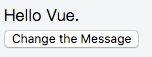
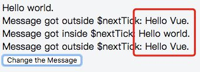

谈谈 Vue.nextTick
- Vue.nextTick([callback,context]) 用途：在下次 DOM 更新循环结束之后执行延迟回调。在修改数据之后立即使用这个方法，获取更新后的 DOM。
1. 示例
模版
<div class="app">
<div ref="msgDiv">{{msg}}</div>
<div v-if="msg1">Message got outside $nextTick: {{msg1}}</div>
<div v-if="msg2">Message got inside $nextTick: {{msg2}}</div>
<div v-if="msg3">Message got outside $nextTick: {{msg3}}</div>
<button @click="changeMsg">
Change the Message
</button>
</div>
new Vue({
el: '.app',
data: {
msg: 'Hello Vue.',
msg1: '',
msg2: '',
msg3: ''
},
methods: {
changeMsg() {
this.msg = "Hello world."
this.msg1 = this.$refs.msgDiv.innerHTML
this.$nextTick(() => {
this.msg2 = this.$refs.msgDiv.innerHTML
})
this.msg3 = this.$refs.msgDiv.innerHTML
}
}
})
点击前

点击后

从图中可以得知：msg1和msg3显示的内容还是变换之前的，而msg2显示的内容是变换之后的。其根本原因是因为Vue中DOM更新是异步的
2. 应用场景
下面了解下nextTick的主要应用的场景及原因
- 在
Vue生命周期的create()钩子函数进行的DOM操作一定要放在Vue.next()的回调函数中
在created()钩子函数执行的时候DOM其实并没有进行渲染，详情可以看生命周期那篇文章，而此时进行DOM操作是无效的，
所以在此处要将DOM操作的js代码放进 Vue.nextTick()的回调函数中。与之对应的就是mounted钩子函数，因为该钩子函数执行时
所有的DOM挂载和渲染已经完成，此时在该钩子函数中进行任何DOM操作都不会有问题
- 在数据变化后要进行的某个操作，而这个操作需要使用随数据改变而改变的
DOM结构的时候，这个操作都应该放进Vue.nextTick()的回调函数中
具体原因在Vue的官方有解释
Vue异步执行 DOM 更新。只要观察到数据变化，Vue 将开启一个队列，并缓冲在同一事件循环中发生的所有数据改变。 如果同一个 watcher 被多次触发，只会被推入到队列中一次。这种在缓冲时去除重复数据对于避免不必要的计算和 DOM 操作上非常重要。 然后，在下一个的事件循环“tick”中，Vue 刷新队列并执行实际 (已去重的) 工作。Vue 在内部尝试对异步队列使用原生的Promise.then和MessageChannel，如果执行环境不支持，会采用setTimeout(fn, 0)代替。例如，当你设置vm.someData = 'new value'，该组件不会立即重新渲染。当刷新队列时，组件会在事件循环队列清空时的下一个“tick”更新。多数情况我们不需要关心这个过程，但是如果你想在 DOM 状态更新后做点什么，这就可能会有些棘手。虽然
Vue.js通常鼓励开发人员沿着“数据驱动”的方式思考，避免直接接触DOM，但是有时我们确实要这么做。为了在数据变化之后等待Vue完成更新DOM，可以在数据变化之后立即使用Vue.nextTick(callback)。这样回调函数在DOM更新完成后就会调用。